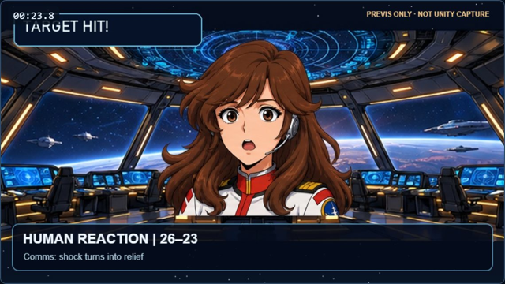

השוואה מסונכרנת של הסטוריבורד הקיים מול המחשת ההרחבה: בחירת חלקים בתוך אובייקט, מעקב אחר תותח, שלושה שיגורים, פגיעה בגוף אויב ומעבר מדויק ל־Anime Emotion. לחצו על נגן או על אחד השוטים.
הבהרה: שני הצדדים משתמשים בתמונות האנימטיק V7 שכבר פורסמו. הצד הימני מדגים באמצעות תנועת תמונה וסימונים כיצד נרצה לביים את הסרט אחרי חיבור Focus Anchors. זה אינו צילום חדש מתוך Unity, אין כאן עוגן תותח אמיתי, ואין הוכחה שהמערכת כבר מממשת זאת.
הבסיס: V7 הקייםתמונות שוטים מתוך האנימטיק שפורסם
CURRENT V7 · REFERENCE FRAME
אחרי: מערכת 4 + מוקדי ענייןהמחשת תנועת מצלמה, לא Unity Capture

Anime Emotionהבעה בלי חיתוך מצלמה
FOCUS ANCHOR · CONCEPT ONLY
00:00.000:30.0
מה משתנה כאן?
ב־V7
אחרי הרחבת המערכת
מה נדרש כדי שהדוגמה תהפוך לסרט אמיתי?
ההדמיה מחייבת ארבע הוכחות שונות ב־Unity, שאינן מתקבלות מעצם העובדה שהדפדפן מצליח לצייר תנועה:
תותח מקומי אמיתיעדיין לא אומתTransform ילד של CS_FLEET_Invasion; מעקב t=5–15 ללא CUT.
ירי ממקורות אמיתייםנדרשת בדיקה מצולמתשלושה מופעי Projectile, לא שכפול חזותי של מטח.
פגיעה ונזק מתמשךנדרשת בדיקה מצולמתשלושה מוקדי Impact על Hull אחד, ועשן שנשאר.
Anime Emotionנדרש פורטרט מקושרהלם והקלה של קצינת הקשר דרך הנכסים ב־CURRENT.